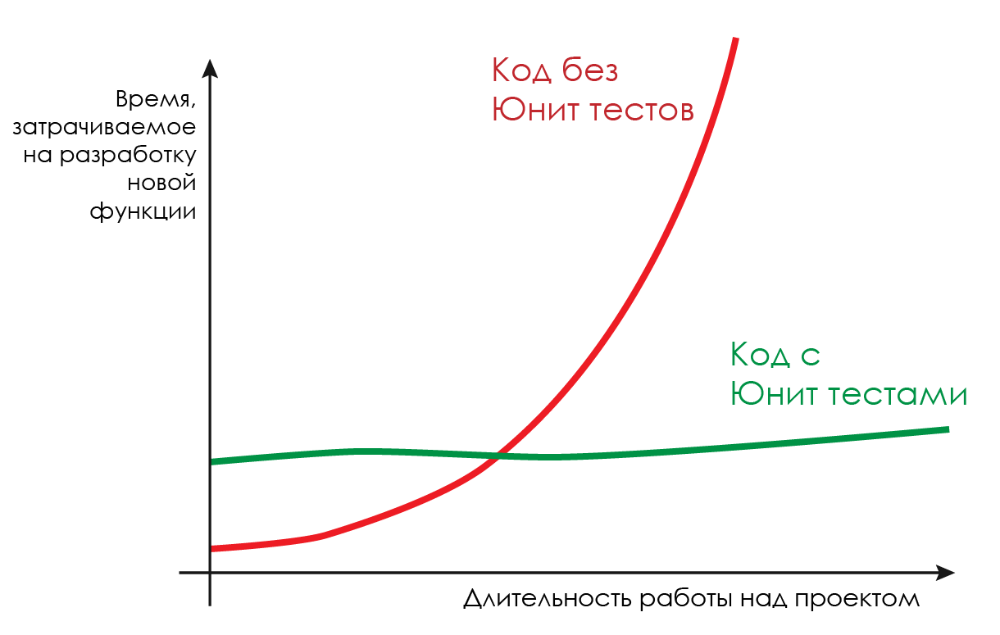
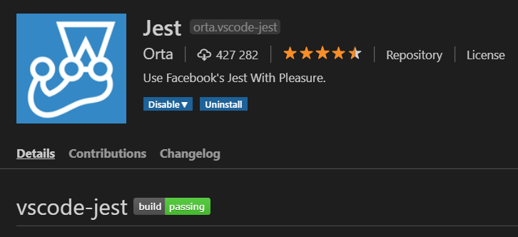

Тестирование
Юнит тесты на JavaScript
Содержание лекции
Тестирование
Ни один серьёзный проект не обходится без тестирования.
Если заглянуть, например, на GitHub - в любом мало-мальски объёмном и поддерживаемом проекте можно будет найти папку с тестами.
Это - Юнит-тесты, - цемент, скрепляющий весь код и не дающий ему развалиться.
Юнит-тесты
Юнит-тесты, или Модульные тесты - тесты, которые проверяют
работоспособность отдельных функций в программного коде системы.
Юнит-тесты пишет программист, а не тестировщик.
Когда программист пишет код, вместе с этим кодом он должен писать для него юнит-тесты. Юнит-тесты проверяют работоспособность написанного кода.
И это не что-то дополнительное или необязательное. Это - обязанность любого (практически) программиста, над каким бы проектом он не работал.
Если вы пишете код для реального проекта, который нужно будет поддерживать и обновлять, - вам нужны будут юнит-тесты.
Юнит-тесты
Любой код состоит из набора функций, ну или объектов с методами. И юнит тесты позволяют точечно оценить работоспособность функций, и сказать, где и что работает не по плану.
Это чрезвычайно важно для Регрессионного тестирования - когда вы обновляете часть кода, и нужно убедиться, что ничего из того, что работало раньше, не поломалось.
Или, вот ещё один пример, когда у вас относительно большая кодовая база, например, несколько десятков тысяч строк, вы можете долгое время не работать над какой-то частью программы, и забыв, как работает код, вернуться, и наломать дров. В таком случае, юнит тесты сразу дадут знать, что именно, и в каких местах, пошло не так.
График
Юнит тесты в JavaScript
В JS существует множество библиотек (фреймворков) для написания юнит тестов:
- Jest
- Mocha
- Jasmine
- Karma
Jest
Jest - самый многофункциональный и универсальный фреймворк тестирования, и мы рассмотрим юнит тесты именно на его примере.
Установка Jest 1
Чтобы установить Jest, понадобится установленный NodeJS на компьютере. А именно, пакетный менеджер npm.
Также проект, к которому нужно подключить Jest, должен являться пакетом NodeJS, т.е. содержать файл package.json.
Создать этот файл можно консольной командой:
npm init
Установка Jest 2
Устанавливается Jest с помощью команды:
npm i -D jest
npm i -D @types/jest
Для того, чтобы его можно было удобно запускать из консоли, нужно прописать соответствующую задачу в разделе scripts в файле package.json:
"scripts": {
"test": "jest"
}
Необходимые зависимости
Чтобы тесты могли работать с файлами модулей, необходимо дополнительно установить еще и эти пакеты:
npm i -D @babel/core
npm i -D @babel/preset-env
Затем, в корне проекта создать файл .babelrc, и написать в нём:
{
"env": {
"test": {
"presets": ["@babel/preset-env"]
}
}
}
Запуск
Чтобы запустить все юнит тесты на исполнение, нужно выполнить команду:
npm test
Или установить расширение для VS Code для Jest:
Файлы с тестами
По умолчанию, Jest ищет все файлы, название которых заканчивается на test.js.
Например, если у вас есть файл index.js, то тесты для функций этого файла обычно выносят в файл index.test.js. Или создают отдельную директорию test в корне проекта, куда размещают все файлы тестов.
Юнит тесты
Но есть одна важная особенность. Юнит тесты обычно запускаются в среде NodeJs, а не в браузере, даже если это браузерный JavaScript.
В браузере запускают другой тип тестов - функциональные, но про них будет следующая лекция.
Правила написания функций
Для того, чтобы код было удобно тестировать, нужно стараться как можно больше использовать чистые функции.
Чистые функции - функции, никак не изменяющие общего состояния системы и не имеющие побочных эффектов. Для одного и того же набора входных параметров функция всегда должна возвращать одинаковый результат.
Более подробно о чистых функциях можно почитать здесь.
Суть
Главное правило, которого следует придерживаться в браузерном JS - всегда отделять чистую логику от кода изменения интерфейса (HTML страницы).
Модули
Тесты всегда пишут в отдельных файлах, поэтому возникает необходимость в получении кода из исходных файлов. Нужно ведь как-то обращаться к функциям, которые собираетесь тестировать.
Обычные скриптовые файлы, которые подключаются к HTML странице, нельзя подключить к другому JavaScript файлу. Ведь тесты запускаются в NodeJS, где никакого HTML документа нет.
И получается, что нужно так писать код, чтобы файлы можно было подключить и к HTML странице, и к другому файлу в NodeJS.
И этого можно добиться, структурировав файлы в модули ES6.
Модули ES6
Модули - способ структуризации и группировки JavaScript кода, когда каждый отдельный файл JS предоставляет свое собственное пространство имён с приватными и публичными элементами.
Модули - это те же файлы JavaScript, только с небольшими дополнениями в коде, и альтернативным способом подключения.
Закрытые модули
При обычном подключение JS файлов, все глобально объявленные переменные и функции попадают в общий глобальный контекст.
При использовании модулей же такого не происходит - в глобальный контекст ничего не добавляется. У каждого модуля своё закрытое пространство имён.
По умолчанию, в модуле все переменные и функции закрыты. Это значит, что к ним никак нельзя получить доступ из других файлов/модулей.
Экспорт
В модулях можно помечать, к каким элементам нужно дать возможность обращаться из других модулей.
Это называется Экспортом.
Каждый модуль может экспортировать свои элементы, которые должны быть публичными.
Например, если в модуле (файле) у вас описано 10 функций, и вы экспортируете одну из них - главную, то только эту функцию можно будет использовать в других модулях (файлах).
Импорт
Подключение в один модуль экспортируемых элементов из другого модуля называется Импортом.
Т.е. сам по себе экспорт не делает глобально видимыми экспортируемые объекты. Экспорт просто позволяет делать импорт.
Если вы хотите что-то из одного файла использовать в другом файле, то в файле-источнике нужно прописать экспорт нужного элемента, а в другом файле сделать его импорт.
Ключевое слово export
Для того, чтобы отметить элемент, как экспортируемый, к нему в начале, перед определением, нужно прописать ключевое слово export.
Хоть можно экспортировать и переменные, рекомендуется экспортировать только функции или классы.
export function myFunc(arg1) {
console.log('I work with ' + arg1);
return 0;
}
export class SomeClass {
constructor() {
console.log('Constructing an instance of the class SomeClass');
}
}
export const key = '6723tgfbvysdbcswygr23gd8237Tr3rwrr';
Комбинированный экспорт
Можно записывать экспорт иначе, не прописывая ключевое слово export по всему коду, а написав весь перечень экспортируемых объектов за один раз:
function myFunc(arg1) {
console.log('I work with ' + arg1);
return 0;
}
class SomeClass {
constructor() {
console.log('Constructing an instance of the class SomeClass');
}
}
const key = '6723tgfbvysdbcswygr23gd8237Tr3rwrr';
// Комбинированный список экспортируемых объектов
export { myFunc, SomeClass, key };
Ключевое слово import
Подключение экспортируемых элементов осуществляется с помощью ключевого слова import. Обычно это прописывается в самом начале файла.
Есть несколько вариаций записи этой команды.
Выборочный импорт
Можно импортировать конкретные объекты по имени, тогда это записывается следующим образом:
// Импорт функции myFunc и класса SomeClass из другого модуля (файла) module-file-name.js
import {myFunc, SomeClass} from './module-file-name.js';
Тогда объекты будут доступны по прописанным именам:
const retVal = myFunc(123);
const instance = new SomeClass();
Суть этого способа в том, что мы импортируем не всё, что экспортирует модуль, а только то, что нам нужно.
Полный импорт
Также можно импортировать весь модуль целиком:
// Импортируем всё в объект myModule из модуля (файла) module-file-name.js
import * as myModule from './module-file-name.js';
Тогда доступ к импортированным элементам будет осуществляться через ключи (свойства) объекта импорта:
const retVal = myModule.myFunc(123);
const instance = new myModule.SomeClass();
let a = 'key string: ' + myModule.key;
Подключение модуля к странице
Для того, чтобы подключить к HTML странице JavaScript файл, являющийся модулем (а модулем будет считаться любой JavaScript файл, в котором присутствуют команды import или export), нужно в теге script использовать дополнительный атрибут type="module".
<script src="js/module-file-name.js" type="module"></script>
Модули, которые используются в других модулях (через import), дополнительно подключать к HTML документу не нужно. Обычно подключается лишь один главный модуль, а через него уже идут связи с остальными.
Связывание модулей

Jest
Пока что только такМатчеры
Результат любого теста отталкивается от какой-либо специфической проверки, от сравнения ожидаемого результата и фактического результата. И для выполнения этих проверок используются Матчеры.
Собственно, Матчеры - это категория функций и объектов в библиотеке тестирования, которые используются для написания проверок в тесте.
Из этого следует, что любой тест опирается на какой-нибудь матчер. Не может быть теста без матчера.
Моки
Часто весь код бывает очень сильно переплетён между собой и связан с какими-то внешними зависимостями. В функции вы можете обращаться к другой функции, которая обращается к третьей функции, и т.д.
Но правильные юнит тесты должны проверять работоспособность лишь одного фактического действия, одной функции.
Тогда как проверить только эту первую функцию без участия всех внутренних?
На помощь приходят Моки.
Мок - это подставная функция или объект. Мок внедряют в тестируемую функцию, и она использует нашу подставную функцию вместо настоящей.
Спаи
Спаи - это засланные в функции шпионы.